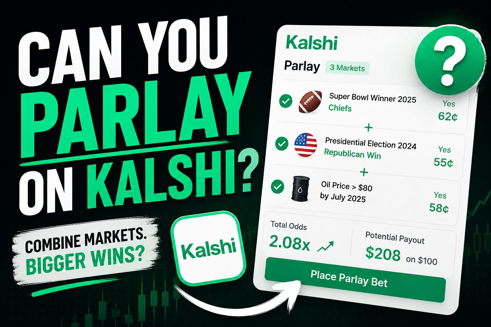

Can You Parlay on Kalshi? How Combos Actually Work

The short answer
Not technically, but functionally, yes. Kalshi is a CFTC-regulated event-contract exchange, not a sportsbook, so there's no bookmaker setting parlay odds the way there would be at a traditional betting site. What Kalshi does offer is a feature called Combos — bundling several individual Yes/No event contracts into a single position that only pays out if every leg resolves the way you predicted. It behaves like a parlay in practice, even though the pricing mechanism underneath it is completely different from a sportsbook's.
Why "parlay" isn't quite the right word
A sportsbook parlay multiplies fixed odds that a bookmaker sets across every leg, and the sportsbook is the counterparty on the other side of your bet. Kalshi doesn't work that way. Every event contract on Kalshi, combo or not, is a Yes/No position priced between $0 and $1 by other traders in a peer-to-peer market — there's no house margin baked into the price, and you're never betting against Kalshi itself. That structural difference is why Kalshi and most people covering the platform are careful to call the feature a Combo rather than a parlay, even though the practical experience of stacking multiple picks into one all-or-nothing position is very similar.
How Kalshi Combos actually got built
Kalshi's earliest sports contracts were single, isolated props — one Yes/No question per contract, filed individually. Multi-leg trading came later: Kalshi self-certified its first combined contract with the CFTC as an election-themed multi-leg market, which paid out only if every specified candidate named in the contract won their race. Sports combos followed shortly after, starting with a small NFL contract combining a handful of legs from a single game. Since then the feature has expanded, though availability still varies by sport and by how close a market is to kickoff.
Building a Combo: the RFQ system
Kalshi prices Combos through a request-for-quote, or RFQ, mechanism rather than a live order book you click into instantly. You select the legs you want — multiple games, or multiple outcomes within the same game — and submit them as a bundle. Kalshi's system returns a custom quoted price for that specific combination, reflecting the combined probability of every leg hitting. You then choose to accept that quote or let it expire; once you accept, the trade is locked in and can't be reversed. Because the quote is generated fresh for your specific combination rather than continuously streamed like a standard order book, there's typically a short delay between submitting your legs and getting a price back — worth knowing so you're not expecting an instant fill the way you might on a single-contract trade.
What you can actually combine
Combo availability on Kalshi is narrower than what a sportsbook parlay slip typically offers. It's concentrated in the sports categories Kalshi covers most actively — professional football and basketball have seen the most combo activity, with additional categories including election-themed multi-leg contracts outside of sports entirely. Within a supported category, you can generally combine legs from the same game (a same-game combo) or stack picks across multiple different games, similar to how a same-game parlay differs from a standard multi-game parlay at a sportsbook.
How payouts work
Like every other Kalshi contract, a Combo settles at exactly $1 per contract if every underlying leg resolves correctly, or $0 if even one leg misses — there's no partial credit for getting most of a Combo right. This is the same all-or-nothing structure a sportsbook parlay uses, which is part of why the feature reads as a parlay to most traders even though the pricing mechanics behind it are built entirely differently.
Before you build one
The RFQ system means you should treat a quoted Combo price as final once accepted — there's no adjusting a leg after the fact, so double-check every selection before confirming. And the same math that makes any parlay a long-shot structure applies here too: every additional leg lowers the probability that the whole bundle hits, even if each individual pick looks reasonable in isolation. Treat a Kalshi Combo as a small, higher-variance position within a broader trading approach rather than a primary strategy.
Disclaimer: This post is for informational purposes only and is not financial, legal, or tax advice. Trading involves risk of loss, and combining multiple legs into a single position increases the chance the overall trade resolves to zero even when most individual legs are correct. Combo availability, categories, and features can change — confirm current details directly on kalshi.com before trading. 18+ only; restrictions and eligibility requirements apply and vary by jurisdiction.